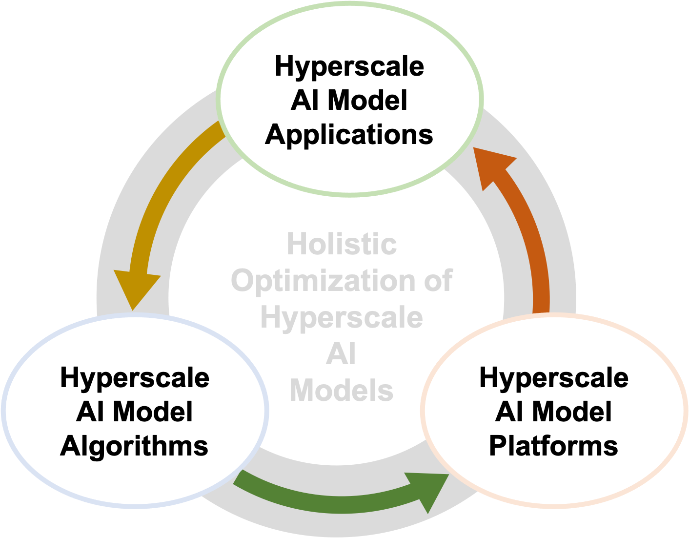

About
People
주관 연구기관: 서울대학교
주관 연구책임자:
이재진
웹사이트:
https://champ.snu.ac.kr
전화: 02-880-1863
연구 목표
초거대 AI 모델의 플랫폼, 알고리즘, 응용을 아우르는 전체적인 최적화(holistic optimization)를 통하여 국내 초거대 AI 모델 기술 개발의 아래 주요 문제를 해결하여 초거대 AI 모델 기술의 한계를 극복
1)
응용, 알고리즘, 플랫폼 개발 주체 간의 소통 및 전체적인 최적화
2)
플랫폼의 성능/전력 장벽
3)
모델의 크기 장벽
4)
한국어 기반 초거대 AI 모델 기술 및 신뢰성 확보의 문제
경량 초거대 AI 모델과 이를 위한 실행 플랫폼, 학습/추론 알고리즘, 응용을 개발하여 그 결과를 실증하고 산업체에 확산
